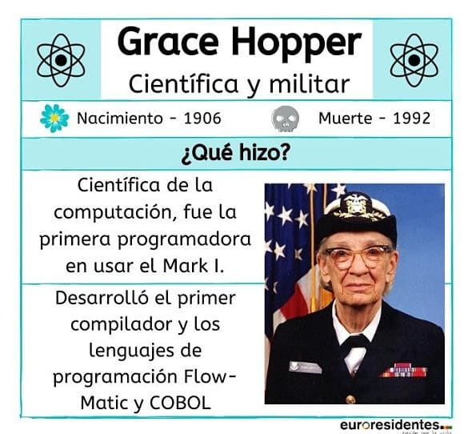
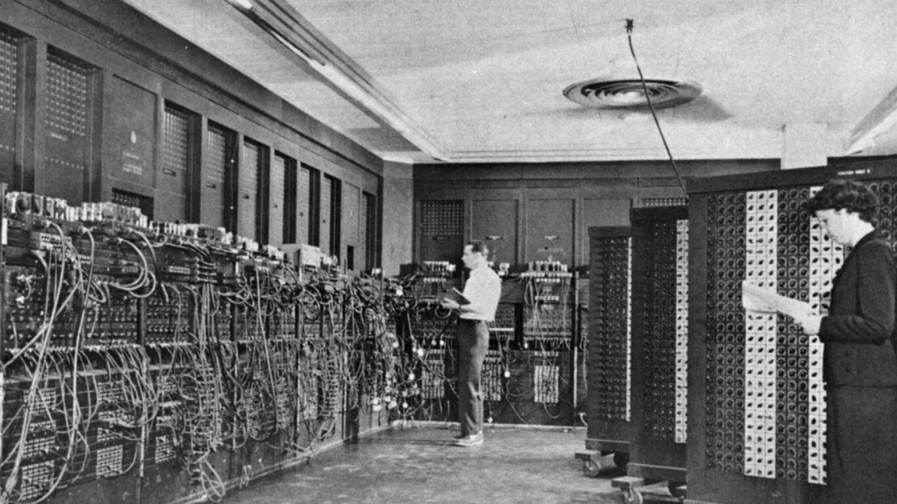
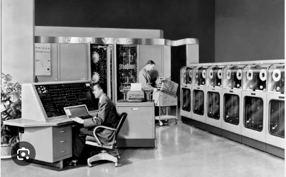
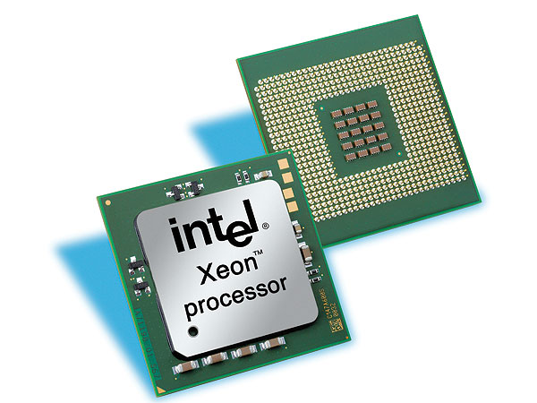

La historia de la unidad central de procesamiento (CPU)
La unidad central de procesamiento (CPU) es el cerebro del ordenador. Se encarga de la asignación y el procesamiento de tareas, además de las funciones que hacen funcionar un ordenador.
La importancia de la CPU para la informática es incalculable. Prácticamente todos los sistemas informáticos contienen, como mínimo, algún tipo de CPU básica. Independientemente de que se utilicen en ordenadores personales (PC), portátiles, tablets, smartphones o incluso en superordenadores cuyo rendimiento es tan elevado que debe medirse en operaciones de coma flotante por segundo, las CPU son la única pieza del equipo de los ordenadores que no puede sacrificarse. Independientemente de los avances tecnológicos que se produzcan, lo cierto es que si se quita la CPU, ya no hay ordenador.
Además de gestionar la actividad del ordenador, las CPU ayudan a habilitar y estabilizar la relación de vaivén que existe entre el almacenamiento de datos y la memoria. La CPU actúa como intermediario, interactuando con el almacenamiento primario (o memoria principal) cuando necesita acceder a datos de la memoria de acceso aleatorio (RAM) del sistema operativo. Por otro lado, la memoria de solo lectura (ROM) está pensada para el almacenamiento permanente de datos, normalmente a largo plazo.
¿Cómo funcionan las CPU?
Las CPU funcionan utilizando un tipo de ciclo de comandos repetidos que administra la unidad de control en asociación con el reloj del ordenador, que proporciona ayuda para la sincronización.
El trabajo que realiza una CPU se produce según un ciclo establecido (denominado ciclo de instrucciones de la CPU). El ciclo de instrucciones de la CPU designa un determinado número de repeticiones, y este es el número de veces que se repetirán las instrucciones básicas de cálculo, según lo permita la potencia de procesamiento de ese ordenador.
Las instrucciones informáticas básicas son las siguientes:
Recuperación: Las recuperaciones se producen cada vez que se recuperan datos de la memoria.
Decodificación: El descodificador de la CPU traduce las instrucciones binarias en señales eléctricas que interactúan con otras partes de la CPU.
Ejecución: A ejecución se produce cuando los ordenadores interpretan y llevan a cabo el conjunto de instrucciones de un programa informático.
Con algunos ajustes básicos, el reloj de una CPU puede manipularse para que marque el tiempo más rápido de lo normal. Algunos usuarios lo hacen para que su ordenador funcione a mayor velocidad. Sin embargo, esta práctica ("overclocking") no es aconsejable, ya que puede provocar que las piezas del ordenador se desgasten antes de lo normal e incluso puede violar las garantías del fabricante de la CPU.
Los estilos de procesado también están sujetos a ajustes. Una forma de manipularlos es implementar la canalización de instrucciones, que trata de infundir paralelismo a nivel de instrucción en un único procesador. El objetivo de la canalización es mantener cada parte del procesador activa dividiendo las instrucciones del ordenador entrantes y distribuyéndolas de manera uniforme entre las unidades de procesamiento. Las instrucciones se dividen en conjuntos más pequeños de instrucciones o pasos.
Otro método para lograr el paralelismo a nivel de instrucción dentro de un único procesador es utilizar una CPU denominada procesador superescalar. Mientras que los procesadores escalares pueden ejecutar un máximo de una instrucción por ciclo de reloj, en realidad no hay límite para el número de instrucciones que puede enviar un procesador superescalar. Envía múltiples instrucciones a varias unidades de ejecución del procesador, lo que incrementa el rendimiento.
Las tecnologías revolucionarias suelen tener más de un progenitor. Cuanto más compleja y revolucionaria es esa tecnología, más individuos suelen ser responsables de ese nacimiento.
En el caso de la CPU, uno de los inventos más importantes de la historia, estamos hablando realmente de quién descubrió el propio ordenador.
Los antropólogos utilizan el término "invención independiente" para describir situaciones en las que distintos individuos, que pueden encontrarse a varios países de distancia unos de otros y en relativo aislamiento, conciben cada uno ideas o invenciones similares o complementarias sin saber que se están realizando experimentos similares.
En el caso de la CPU (u ordenador), la invención independiente se ha producido repetidamente, dando lugar a diferentes cambios evolutivos a lo largo de la historia de la CPU.
Aunque este artículo no puede rendir homenaje a todos los pioneros de la informática, hay dos personas cuyas vidas y trabajo necesitan destacarse. Ambos tenían una conexión directa con la informática y la CPU:
Grace Hopper: un saludo a a la “abuela COBOL”

La estadounidense Grace Brewster Hopper (1906-1992) pesaba apenas 48 kilos cuando se alistó en la Marina de los EE.
UU., 10 kilos por debajo del límite de peso exigido. Y en una de las decisiones más sabias de la historia marítima de Estados Unidos, la Marina le concedió una exención y la aceptó de todos modos.
Lo que a Grace Hopper le faltaba en tamaño físico, lo compensaba con energía y brillantez versátil. Era una polímata de primer orden: matemática de talento con dos doctorados en la Universidad de Yale, uno en matemáticas y otro en física matemática, catedrática de matemáticas en el Vassar College, pionera en informática, autora de un lenguaje informático y del primer manual de informática, y comandante naval (en una época en la que las mujeres rara vez superaban las funciones administrativas en el ejército).
Debido a su trabajo en proyectos informáticos punteros de su época, como el desarrollo del superordenador UNIVAC tras la Segunda Guerra Mundial, Hopper siempre parecía estar en el meollo de la acción, siempre en el lugar adecuado en el momento oportuno. Había sido testigo de gran parte de la historia de la informática moderna. Fue ella quien acuñó originalmente el término en inglés "computer bug", para describir una polilla real que había quedado atrapada en un equipo informático. (La polilla original permanece expuesta en el Museo Nacional de Historia Americana de la Institución Smithsonian, en Washington, DC).
Durante su experiencia trabajando en el proyecto UNIVAC (y más tarde dirigiendo el proyecto UNIVAC para la Remington Rand Corporation), Hopper se sintió frustrado por la falta de un lenguaje de programación más sencillo que pudiera utilizarse. Así que se dedicó a escribir su propio lenguaje de programación, que llegó a conocerse como COBOL (acrónimo de COmmonBusiness-Oriented Language).
Robert Noyce: el alcalde de Silicon Valley
Robert Noyce era un impulsor y agitador en el sentido clásico de la palabra, una persona capaz de hacer que una actividad asombrosa empezara a suceder con sólo aparecer.
El estadounidense Robert Noyce (1927-1990) fue un niño prodigio de la invención. Más tarde canalizó su curiosidad intelectual en su trabajo universitario, especialmente después de que le enseñaran dos de los transistores originales creados por los Laboratorios Bell. A los 26 años, Noyce se doctoró en física por el Instituto Tecnológico de Massachusetts (MIT).
En 1959, dio continuidad a la invención de Jack Kilby en 1958 del primer circuito integrado híbrido introduciendo modificaciones sustanciales en el diseño original. Las mejoras de Noyce dieron lugar a un nuevo tipo de circuitos integrados: el circuito integrado monolítico (también llamado microchip), que se formuló utilizando silicio. Pronto el chip de silicio se convirtió en una revelación, cambiando sectores y configurando la sociedad de nuevas maneras.
Noyce cofundó dos empresas de enorme éxito durante su carrera empresarial: Fairchild Semiconductor Corporation (1957) e Intel (1968). Fue el primer Consejero Delegado de Intel, que sigue siendo mundialmente conocida por fabricar chips de procesamiento.
Su socio en ambas empresas fue Gordon Moore, que se hizo famoso por una predicción sobre la industria de los semiconductores que resultó tan fiable que ha parecido casi un algoritmo. Denominada "Ley de Moore", postulaba que el número de transistores que se utilizan en un circuito integrado se duplica de forma fiable cada dos años aproximadamente.
Mientras Noyce estuvo al frente de Intel, la empresa produjo el Intel 4004, reconocido hoy como el chip que lanzó la revolución de los microprocesadores en la década de 1970. La creación del Intel 4004 supuso una colaboración a tres bandas entre Ted Hoff, Stanley Mazor y Federico Faggin de Intel, y se convirtió en el primer microprocesador ofrecido comercialmente.
A finales de su mandato, la empresa también produjo el Intel 8080, el segundo microprocesador de 8 bits de la empresa, que apareció por primera vez en abril de 1974. Al cabo de un par de años, el fabricante lanzó el Intel 8086, un microprocesador de 16 bits.
A lo largo de su ilustre carrera, Robert Noyce acumuló 12 patentes por diversas creaciones y fue galardonado por tres presidentes distintos de Estados Unidos por su trabajo en los circuitos integrados y la enorme repercusión mundial que tuvieron.
ENIAC: rumbo a la guerra

á suene muy dramático, pero en 1943 el destino del mundo pendía realmente de un hilo. El desenlace de la Segunda Guerra Mundial (1939-1945) estaba aún muy por decidir, y tanto las fuerzas aliadas como las del Eje buscaban afanosamente cualquier tipo de ventaja tecnológica para ganar ventaja sobre el enemigo.
Los dispositivos informáticos estaban aún en pañales cuando se creó un proyecto tan monumental en su forma como el Proyecto Manhattan. El gobierno estadounidense contrató a un grupo de ingenieros de la Escuela Moore de Ingeniería Eléctrica de la Universidad de Pensilvania. La misión les pedía que construyeran un ordenador electrónico capaz de calcular las cantidades de yardas para las tablas de alcance de la artillería.
El proyecto fue dirigido por John Mauchly y J. Presper Eckert, Jr. a petición de los militares. Los trabajos comenzaron a principios de 1943 y no terminaron hasta 3 años después.
La creación producida por el proyecto (denominado ENIAC, por las siglas de "Electronic Numerical Integrator and Computer") era una enorme instalación que requería 1500 m2. pies cuadrados de superficie, por no mencionar 17 000 tubos de vacío de vidrio, 70 000 resistencias, 10 000 condensadores, 6000 interruptores y 1500 relés. En moneda de 2024, el proyecto habría costado 6,7 millones de dólares.
Podía procesar hasta 5000 ecuaciones por segundo (dependiendo de la ecuación), una cantidad asombrosa vista desde aquel punto de vista histórico. Debido a su generoso tamaño, el ENIAC era tan grande que la gente podía permanecer de pie dentro de la CPU y programar la máquina recableando las conexiones entre las unidades funcionales de la máquina.
El ENIAC fue utilizado por el ejército estadounidense durante el resto de la Segunda Guerra Mundial.a Mundial. Pero cuando el conflicto terminó, comenzó la Guerra Fría y este recibió nuevas órdenes de marcha. Esta vez realizaría cálculos que permitirían construir una bomba con una fuerza explosiva más de mil veces superior a la de las armas atómicas que pusieron fin a la Segunda Guerra Mundial: la bomba de hidrógeno.
UNIVAC: vuelta a los negocios

Tras la Segunda Guerra Mundial, los dos líderes del proyecto ENIAC decidieron establecerse y llevar la informática a las empresas estadounidenses. La recién bautizada Eckert-Mauchly Computer Corporation (EMCC) se dispuso a preparar su producto estrella: una versión más pequeña y barata del ENIAC, con diversas mejoras como la incorporación de unidades de cinta, un teclado y un dispositivo conversor que aceptaba el uso de tarjetas perforadas.
Aunque lucía más elegante que el ENIAC, el UNIVAC que se presentó al público en 1951 seguía siendo gigantesco: pesaba más de 8 toneladas y consumía 125 kW de energía. Y seguía siendo caro: unos 11,6 millones de dólares en moneda actual.
En cuanto a su CPU, contenía la primera CPU (la UNIVAC 1103) que se desarrolló al mismo tiempo que el resto del proyecto. El UNIVAC 1103 utilizaba tubos de vacío de vidrio, lo que hacía que la CPU fuera grande, poco manejable y lenta.
El lote original de UNIVAC 1 se limitó a una tirada de 11 máquinas, lo que significaba que sólo las empresas o agencias gubernamentales más grandes, mejor financiadas y mejor conectadas podían acceder a un UNIVAC. Casi la mitad eran agencias de defensa estadounidenses, como la Fuerza Aérea y la Agencia Central de Inteligencia (CIA). El primer modelo fue adquirido por la Oficina del Censo de Estados Unidos.
CBS News tenía una de estas máquinas y la utilizó para predecir correctamente el resultado de las elecciones presidenciales de 1952. Fue un audaz truco publicitario que dio a conocer al público estadounidense las maravillas que podían hacer los ordenadores.
Transistores: crecer con lo pequeño
A medida que la informática se hacía cada vez más real y célebre, se hacía patente su principal debilidad. Las CPU tenían un problema constante con los tubos de vacío que se utilizaban. En realidad era una cuestión mecánica: Los tubos de vacío de vidrio eran extremadamente delicados y propensos a la rotura rutinaria.
El problema era tan acuciante que el fabricante hizo todo lo posible por ofrecer una solución alternativa a sus numerosos y agitados clientes, cuyos ordenadores se paraban en seco sin que funcionaran los tubos.
El fabricante de los tubos los probaba regularmente en la fábrica, sometiéndolos a diferentes grados de uso y abuso en fábrica, antes de seleccionar los tubos "más resistentes" de esos lotes para mantenerlos en reserva y listos para las peticiones urgentes de los clientes.
El otro problema de los tubos de vacío en las CPU tenía que ver con el tamaño de la propia máquina de computación. Los tubos eran voluminosos y los diseñadores buscaban una forma de obtener la potencia de procesamiento del tubo en un dispositivo mucho más pequeño.
En 1953, un estudiante de investigación de la Universidad de Manchester demostró que se podía construir un ordenador completamente basado en transistores (enlace externo a ibm.com).
Los transistores originales eran difíciles de manejar, en gran parte porque se fabricaban con germanio, una sustancia difícil de purificar y que debía mantenerse a temperaturas muy precisas.
Los científicos del Laboratorio Bell empezaron a experimentar con otras sustancias en 1954, incluido el silicio. Los científicos de Bell (Mohamed Italia y Dawn Kahng) siguieron perfeccionando el uso del silicio y en 1960 habían dado con la fórmula del transistor de efecto de campo de óxido metálico y semiconductor (o MOSFET, o transistor MOS) moderno, que ha sido celebrado como el "dispositivo más fabricado de la historia " (enlace externo a ibm.com) por el Museo de Historia de la Informática. En 2018 se estimó que se habían fabricado 13 sextillones de transistores MOS.
La llegada del microprocesador

La búsqueda de la miniaturización continuó hasta que los informáticos crearon una CPU tan pequeña que podía contenerse en un pequeño chip de circuito integrado, llamado microprocesador.
Los microprocesadores se designan por el número de núcleos que admiten. El núcleo de la CPU es el "cerebro dentro del cerebro", la unidad física de procesamiento de la CPU. Los microprocesadores pueden contener varios procesadores. Por su parte, un núcleo físico es una CPU integrada en un chip, pero que sólo ocupa un zócalo, lo que permite a otros núcleos físicos aprovechar el mismo entorno informático.
Estos son algunos de los principales términos utilizados en relación con los microprocesadores:
Procesadores de un solo núcleo: los procesadores de un solo núcleo contienen una sola unidad de procesamiento. Suelen caracterizarse por un rendimiento más lento, se ejecutan en un único hilo y realizan el ciclo de instrucciones de la CPU de una en una.
Procesadores de doble núcleo: los procesadores de doble núcleo están equipados con dos unidades de procesamiento contenidas en un circuito integrado. Ambos núcleos funcionan al mismo tiempo, lo que duplica el rendimiento.
Procesadores de cuatro núcleos: los procesadores de cuatro núcleos contienen cuatro unidades de procesamiento en un único circuito integrado. Todos los núcleos funcionan simultáneamente, cuadruplicando las tasas de rendimiento.
Procesadores multinúcleo: los procesadores multinúcleo son circuitos integrados equipados con al menos dos núcleos de procesamiento, por lo que pueden ofrecer un rendimiento supremo y un consumo de energía optimizado.
Principales fabricantes de CPU
En la actualidad, varias empresas crean productos compatibles con CPU a través de distintas líneas de marca. Sin embargo, este nicho de mercado ha cambiado radicalmente, ya que antes atraía a numerosos actores, entre los que se encontraban bastantes fabricantes convencionales (por ejemplo, Motorola). Ahora sólo hay un par de actores protagonistas: Intel y AMD.
Utilizan distintas arquitecturas de conjuntos de instrucciones (ISA). Así, mientras que los procesadores AMD se basan en la arquitectura RISC (Reduced Instruction Set Computer), los procesadores Intel siguen una arquitectura CISC (Complex Instruction Set Computer).
Advanced Micro Devices (AMD): AMD vende procesadores y microprocesadores a través de dos tipos de productos: CPU y APU (que significa unidades de procesamiento acelerado). En este caso, las APU son simplemente CPU equipadas con gráficos Radeon patentados. Los procesadores Ryzen de AMD son microprocesadores de alta velocidad y rendimiento destinados al mercado de los videojuegos. Los procesadores Athlon se consideraban antes la línea de gama alta de AMD, pero ahora AMD los utiliza como alternativa de uso general.
Arm: en realidad, Arm no fabrica equipos, pero alquila sus valiosos diseños de procesador y/u otras tecnologías patentadas a otras empresas que fabrican equipos. Apple, por ejemplo, ya no utiliza chips Intel en las CPU de los Mac, sino que fabrica sus propios procesadores personalizados basados en diseños de Arm. Otras empresas están siguiendo su ejemplo.
Intel: Intel vende procesadores y microprocesadores a través de cuatro líneas de productos. Su línea premium es Intel Core, que incluye modelos de procesador como el Core i3. Los procesadores Xeon de Intel se comercializan para oficinas y empresas. Las líneas Celeron e Intel Pentium de Intel (representadas por modelos como las CPU mononúcleo Pentium 4) se consideran más lentas y menos potentes que la línea Core.
Comprender el papel fiable de las CPU
Al considerar las CPU, podemos pensar en los distintos componentes que contienen y utilizan. También podemos contemplar cómo ha evolucionado el diseño de las CPU desde sus primeros experimentos sobredimensionados hasta su moderno periodo de miniaturización.
Pero a pesar de cualquier transformación en sus dimensiones o apariencia, la CPU sigue firme, porque lleva a cabo su función con excelencia. El usuario sabe que puede confiar en que funcionará correctamente en todo momento.
La informática inteligente depende de contar con equipos adecuados en los que se pueda confiar. IBM construye sus servidores de forma sólida, para que resistan cualquier problema que les pueda plantear el lugar de trabajo moderno. Encuentre los servidores IBM que necesita para obtener los resultados en los que confía su organización.
.jpg)
.jpg)
.jpg)